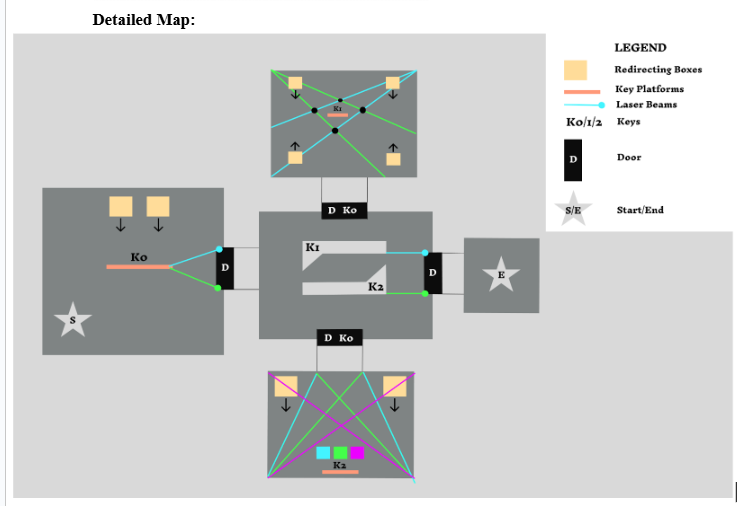
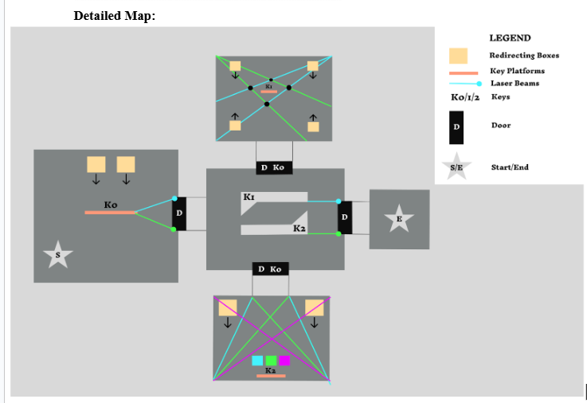

Level Design Process: Molecular Design to Detailed Maps
How I design Molecular Drawnings:
In my work, I always listen to the requirements of the gameplay designer and understand the vibe of the game before I start to draw an abstract representation of the level.
I breakdown my level into zones or segments, each representing a gameplay encounter, tutorial, or challenge.
These segments are connected by arrows that define flow and progression.
From Molecular Drawnings to Detailed Maps:
From conceptual drawings, I transition to detailed maps by defining spatial and environmental details. This includes:
-Geometry and architecture of the level
-Enemy and NPC placements
-Traversal Elements
-Environmental Storytelling
A few examples of my Molecular Drawings & Detailed Maps:
Below is an example layout for a shooter game.
Below is an example layout for a lazer puzzle game.
 

Below is the level layout for the Lyra Control Points Project
Checkout my Lyra Level Design!